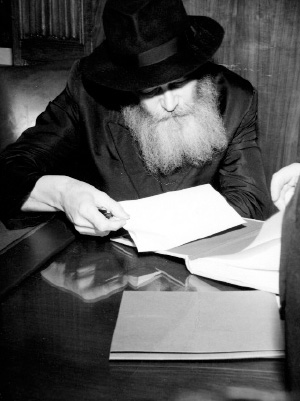

The Rebbe on Conversion, Education, and Prayer
Letters from the Rebbe publicized in the t’shura from the Telsner-Goldshmidt wedding held on the 23rd of Adar Sheni.

By the Grace of G-d
11th of Cheshvan, 5740
Brooklyn, N.Y.
Mr.
Bombay, India
Greeting and Blessing:
After not hearing from you for a long time, I was pleased to receive your letter of the 1st of MarCheshvan, and to note that you are in contact with Askanim who are active in the vital problem of ensuring Geyrus in accordance with the Halacha.
It is a tragic state of affairs if it is necessary to argue and prove that “conversions” that are not in accord with the Halacha are “not worth the paper on which they are written”? Moreover, it would be laughable, if it were not so tragic, that such “conversions” to Judaism are performed by an individual whose own conduct and way of life is diametrically contrary to authentic Judaism, and such a person is supposedly converting gentiles and bringing them into the bosom of the Jewish people.
There is surely no need to point out that since such conversions are in most cases connected with marriage, the conversion obviously affects not only the immediate parties, but also their children and offspring to all posterity. In other words, the effect of this distortion and transgression is a lasting one, affecting all generations, and the one who perpetrates it, regardless of his motives, causes untold harm for all future generations. There is, of course, no need to elaborate to you on this painful question. But it is simply impossible not to cry out in pain, even in a few brief lines.
May G-d grant that you should continue your utmost efforts in this most important matter, and this will surely bring you and yours additional Divine blessings in all needs.
You do not mention anything about the matters of health and Parnasa, from which I gather that all is well, and may things go from good to better.
I trust you took the fullest advantage of the month of Tishrei to spread and strengthen Torah-true Yiddishkait in all your surroundings.
With blessing,
M. SCHNEERSON
THE INFLUENCE OF SUMMER CAMP
By the Grace of G-d
6th of Adar II, 5719
Brooklyn, N.Y.
Committee of Beth Rivka Youth
East St. Hilda, Vic.
Australia
Blessing and Greeting:
I was pleased to receive your letter of the 17th of Adar I, in which you report on your work in connection with your first Annual Summer Camp.
I hope that the contact that you have made with these girls during the camp season will be maintained by you also after the season and throughout the year. For, as you know, the purpose of this camp is to invigorate the campers both physically and spiritually, and the maintenance of contact will surely have a beneficial influence on the girls in their studies and conduct throughout the year. I need hardly emphasize that very often children find themselves in an undesirable environment and undesirable influences which must be counteracted. Therefore, it is advisable to arrange a reunion several times during the year, as is done in connection with our camps here in the States. Such days as Purim, Lag B’Omer, and the Festivals in general, provide good opportunities for such reunions, etc.
I send my prayerful wishes to all the Madrichos to make ever-growing strides in their own holy studies, and in all matters connected with daily life and conduct, for in order to be a source of inspiration and influence, one must possess a wealth of all those good things which one desires to impart to others.
Hoping to hear good news from you always,
With blessing,
I hope that you are in communication with the N’shei U’Bnos Chabad, and it would be well also for you to communicate with the central organization of the N’shei in Brooklyn, which you can do through our office.
GIRLS’ EDUCATION
By the Grace of G-d
6th of Adar II, 5719
Brooklyn, N.Y.
Mr.
Melbourne, Vic.
Australia
Greeting and Blessing:
I was gratified to receive your Cable, in which you state that negotiations for the purchase of a magnificent building for Beth Rivka have been completed.
I am looking forward to receiving the happy news that studies have already begun in the new building, to educate the Jewish daughters so that they would realize that each one is a daughter of Sarah, Rivka, Rachel, and Leah, and will, in due course, be the foundation of a Jewish home. As we discussed this matter at length, I trust that no effort will be spared in this direction, and the very success which you have already accomplished with G-d’s help will surely spur you to ever-greater accomplishments. I trust, in fact, that before long this new building will prove too small to house all the girls, and that it will therefore be the forerunner of greater things to come.
The Cable with the happy news came appropriately during the happy month of Adar. As you know, it was a Jewish daughter who had a prominent part in the happy turn of events which gave us the Festival of Purim. Esther was able to accomplish such wonderful things because she had the proper education and upbringing in the house of Mordecai, who was the head of the Sanhedrin, as our Sages tell us. Her education stood her so well that even though she was in the royal palace and was an Empress of 127 lands, she remained loyal to her faith and, as the Megilla tells us, “For Esther did the commandment of Mordecai like as when she was brought up with him.”
Please convey my heartfelt expression of Mazel Tov and best wishes to everyone who has participated in the efforts to acquire this building, and may each and every one of you go from strength to strength in the development and growth of the Beth Rivka and the Yeshiva, and all activities for the strengthening and dissemination of the Torah and Mitzvoth on the widest possible scale.
With blessing,
MECHITZA DURING PRAYER
By the Grace of G-d
4 Elul 5711
Brooklyn 13, N.Y.
To the President and Officers
Congregation Ahavas Achim Lubavitch
Sholom u’Brocho!
I was deeply disturbed to hear that there are individuals in your congregation who are inclined to introduce a new order in your synagogue to permit men and women worshippers to sit there without a partition.
Although I do not know them, I take the liberty to write to you, because we all hold so dear the name of “Lubavitch,” and in general, a Shul where Jews pour out their hearts in prayer to the Almighty, for health and sustenance, for themselves and their children.
Since the worshipper prays for G-d’s blessings as he wants them to be, good and generous in every detail, it is obvious that every effort should be made to bring the place of worship, even in its outer aspects, as close as possible to the way G-d wants it to be, and no infringement whatever should be allowed to mar the sanctity of the place.
It is surely superfluous to enlarge upon the fact that from olden days, throughout the generations, wherever Jews gathered to pray, men and women prayed separately. Anyone recalling his parents and ancestors, pious and devoted as they were to our sacred traditions, can have no doubts as to what their feelings in this matter would be.
These sentiments are even more profound in the case of a Shul connected with the glorious traditions of the Lubavitcher Rabbis, known for their self-sacrificing work to preserve the sacred traditions among Jews in general, and among their followers in particular. In a congregation bearing the noble name of “Lubavitch,” a Shul without a Mechitza (partition) is completely unthinkable.
My father-in-law, of sainted memory, often quoted the Old Rabbi, founder of Lubavitch, that a Jew neither desires nor is capable of being separated from G-dliness. Especially in these days of repentance and Divine benevolence, when every Jew feels the inspiration and urge to come closest to G-d, I trust and pray that every member of your congregation, and especially officer and trustee, will use his influence to reject any idea of doing away with the Mechitza.
In the merit of this the Almighty will accept your prayers, and all the worshippers and officers will be inscribed unto a healthy and happy New Year.
I am looking forward to hearing from you that the matter of the Mechitza has been properly taken care of, and thank you for informing me of same.
Wishing you a Kesivo Vachasimo Toivo,
Cordially yours,
P.S. I have sent identical letters to several leading members of your congregation. However, I wish to emphasize that each one individually bears the responsibility – as though he were alone – that your Shul justifies its noble name.
Beis Moshiach (staff). "The Rebbe on Conversion, Education, and Prayer." Beis Moshiach, no. 923 (April 10, 2014).